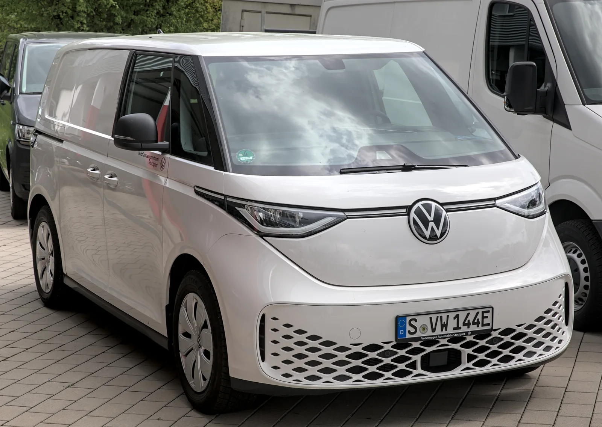
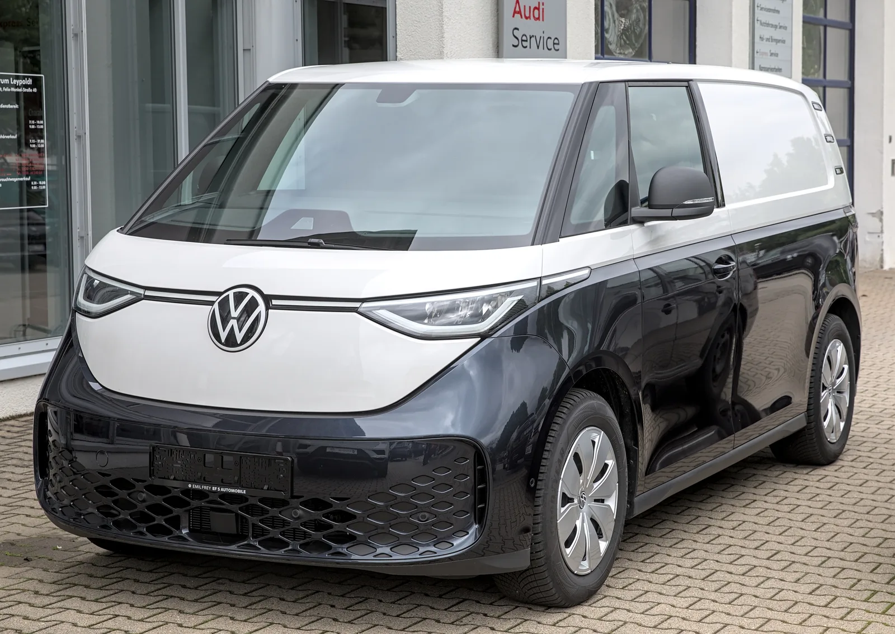

▲ 기아 PV5가 출시 13개월 만에 전 세계 누적 5만대 넘게 팔리며 상용 전기밴 시장의 화두로 떠올랐다 사진=기아
1. 폭스바겐, ID.버즈 카고 '롱 휠베이스' 전격 투입
폭스바겐이 전기 상용밴 ID.버즈 카고의 오랜 약점으로 꼽혀온 적재 공간 문제를 휠베이스 확장이라는 카드로 정면 돌파했다. 폭스바겐은 최근 차체를 25cm(250mm) 늘린 ID.버즈 카고 롱 휠베이스 모델을 공개했다. 신형의 전장은 4,960mm로 기존 모델보다 250mm 길어졌는데, 늘어난 길이가 뒤 오버행이 아니라 앞뒤 바퀴 사이에 고스란히 반영돼 휠베이스 자체가 3,250mm로 확장된 게 특징이다. 자동차 업계에서는 이 움직임을 두고 기아 PV5 카고와 용도가 정면으로 겹치는 두 모델의 경쟁이 본격화됐다는 신호로 받아들이는 분위기다.
2. 적재함부터 배터리까지, 어디가 얼마나 커졌나
적재 공간은 기존 3.9㎥에서 4.4㎥로 늘었다. 적재 바닥 크기는 길이 2,460mm, 폭 1,230mm 수준으로 확보돼 유로 팔레트를 가로 방향으로 실을 수 있게 됐다. 최대 적재 중량은 후륜구동 모델이 700kg, 사륜구동 모델이 606kg으로 알려졌다. 여기에 두 번째 슬라이딩 도어가 기본 사양으로 제공되고, 외부 전력 공급 기능(V2L)과 원 페달 주행 기능도 새로 더해졌다.

▲ 기아 PV5 카고의 측면 모습. 상용밴 시장에서는 디자인뿐 아니라 적재량과 운행 비용이 구매를 좌우하는 핵심 요소로 꼽힌다 사진=기아
파워트레인 면에서는 86kWh 배터리가 새로 적용됐다. 후륜구동 모델은 최고출력 210kW, 4모션 사륜구동 모델은 250kW를 발휘한다. 독일 기준 가격을 원화로 환산하면 후륜구동 모델은 약 7,540만 원, 사륜구동 모델은 약 7,880만 원부터로 알려졌다. 다만 이 가격은 부가가치세가 제외된 독일 현지 상용차 가격이어서, 국내 소비자가 실제 체감할 최종 가격과는 차이가 클 수밖에 없다.
| 항목 | 기존 모델 | 롱 휠베이스 모델 |
|---|---|---|
| 전장 | 4,710mm | 4,960mm(+250mm) |
| 휠베이스 | 3,000mm | 3,250mm |
| 적재 용량 | 3.9㎥ | 4.4㎥ |
| 배터리 | - | 86kWh |
| 최고출력 | - | 후륜 210kW / 사륜(4모션) 250kW |
| 최대 적재 중량 | - | 후륜 700kg / 사륜 606kg |
3. 기아 PV5, 13개월 만에 전 세계 5만대 넘게 팔렸다
이번 폭스바겐의 대응이 '무리수'라는 평가를 받는 배경에는 기아 PV5의 예상을 뛰어넘는 판매 실적이 있다. 한국경제와 글로벌이코노믹 등의 보도에 따르면, 기아 PV5는 2026년 7월 말 기준 출시 13개월 만에 전 세계 누적 5만3530대가 판매됐다. 이 가운데 해외 판매가 3만2222대(60.2%)로 국내 판매(2만1308대, 39.8%)보다 많아, 해외 시장에서 더 뜨거운 반응을 얻고 있는 것으로 나타났다. PV5는 아시아 전기밴 최초로 '2026 세계 올해의 밴'에 선정되고 유로 NCAP 최고 등급을 획득하는 등 상품성 면에서도 호평을 받아온 모델이다.

▲ 모터쇼에 전시된 기아 PV5 패신저. PV5는 PBV(목적기반차량) 전용 플랫폼을 바탕으로 카고·패신저 등 다양한 파생 모델로 확장되고 있다 사진=기아
📍 왜 '무리수'라는 표현이 나왔나
ID.버즈 카고 롱 휠베이스는 차체를 늘려 적재함을 키운 파생 모델로, 신차 개발보다 빠르게 대응할 수 있는 카드다. 이를 두고 오토트리뷴은 PV5의 인기가 폭스바겐으로 하여금 기존 모델의 약점(좁은 적재 공간)을 서둘러 보완하게 만든 것으로 해석했다. 다만 차체를 늘리는 방식만으로 PV5와의 디자인·상품성 격차를 메우기는 쉽지 않다는 게 업계의 시각이다.
4. 디자인은 밀리지 않는다, 승부처는 '운행 비용'
오토트리뷴은 두 모델의 경쟁에서 폭스바겐이 강점으로 내세우는 복고풍 디자인과 고급스러운 실내가 카고 밴에서는 상대적으로 희미하다고 짚었다. 반면 기아 PV5·PV7 등 PV 라인업은 상용 모델에서도 디자인 면에서 밀리지 않는다는 평가를 받는다. 실제로 PV5는 박스형 차체를 기반으로 하면서도 슬라이딩 도어와 넓은 실내 구성 등에서 실용성과 디자인을 함께 갖췄다는 평가를 받아왔다.

▲ 폭스바겐 ID.버즈 카고. 옆면에 창문이 없는 밀폐형 화물칸 구조로, 카고 모델은 복고풍 디자인이라는 브랜드 강점이 상대적으로 두드러지지 않는다는 평가를 받는다 사진=폭스바겐
업계에서는 상용차 시장의 특성상 적재량, 운행 비용, 서비스 접근성이 실제 구매 결정에 더 큰 영향을 미친다고 본다. 이 기준으로 보면 PV5는 이미 5만대 넘는 글로벌 판매 실적과 국내외 서비스망을 갖추고 있어, 신규 진입 모델인 ID.버즈 카고 롱 휠베이스 대비 유리한 위치에 있다는 분석이 나온다.

▲ 폭스바겐 ID.버즈 카고 전면부. 승합 모델에서는 브랜드 헤리티지가 강점이지만, 카고 모델의 경쟁력은 적재량과 비용 대비 효율에서 판가름 날 전망이다 사진=폭스바겐

▲ 기아 PV5 후면부. 업계는 상용 전기밴 경쟁의 승부처가 디자인을 넘어 적재량과 운행 비용, 서비스망에 있다고 본다 사진=기아
5. 상용 전기밴 시장, PBV 경쟁 본격화
기아 PV5와 폭스바겐 ID.버즈 카고는 목적기반차량(PBV) 성격이 짙은 상용 전기밴이라는 점에서 같은 시장을 두고 부딪힌다. 택배·물류 등 라스트마일 배송 수요가 늘면서 완성차 업체들이 잇달아 전용 플랫폼 기반의 전기 상용밴을 내놓고 있는 가운데, 기아는 PV5를 시작으로 PV7 등으로 라인업을 넓히며 시장 선점에 나섰고, 폭스바겐은 기존 ID.버즈의 파생 모델로 대응에 나선 모양새다. 업계에서는 이번 롱 휠베이스 모델 투입을 계기로 두 브랜드의 상용 전기밴 경쟁이 한층 치열해질 것으로 보고 있다.
✅ 이번 기사에서 확인해 둘 것
· ID.버즈 카고 롱 휠베이스는 차체를 250mm 늘려 적재 용량을 3.9㎥→4.4㎥로 확대
· 기아 PV5는 출시 13개월 만에 전 세계 누적 5만3530대 판매(2026년 7월 말 기준), 해외 비중 60.2%
· 독일 기준 가격은 부가세 제외 상용차 가격으로, 국내 판매가와는 차이가 있을 수 있음
· 업계는 디자인·적재량·서비스망 등에서 PV 라인업의 상대적 우위에 무게를 두는 분위기
6. 요약
폭스바겐이 ID.버즈 카고의 적재 공간 약점을 보완하기 위해 차체를 250mm 늘린 롱 휠베이스 모델을 내놨다. 적재 용량은 3.9㎥에서 4.4㎥로 커졌고, 86kWh 배터리와 사륜구동 옵션도 새로 추가됐다.
이런 대응의 배경에는 출시 13개월 만에 전 세계 누적 5만3530대를 판매한 기아 PV5의 인기가 있다. 업계에서는 상용차 구매를 좌우하는 적재량·운행 비용·서비스 접근성 면에서 기아 PV 라인업이 여전히 유리한 위치에 있다고 보고 있다.